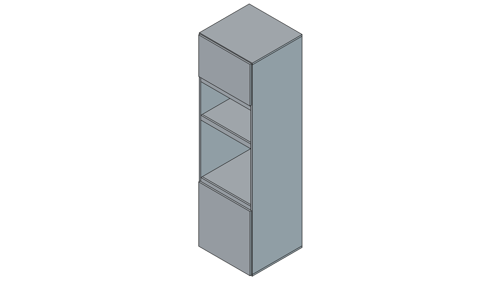
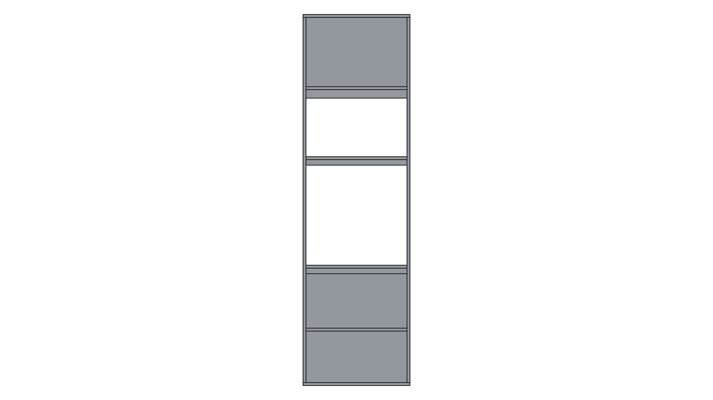

Módulo: Columna Horno + Microondas
Código: H Terminación: Melamina blanca
Espesor estándar: 18 mm
Vistas del Mueble

Isométrica
Frente

Posterior
Lateral Izquierdo
Lateral Derecho
Superior
Inferior
Detalle de Cortes
Código
Categoría
Pieza
Cant.
Largo (mm)
Ancho (mm)
Espesor (mm)
Cantos
H1
Lateral
Lateral_Izq
1
2184.0
600.0
18.0
Cantos frente+arriba+abajo
H2
Lateral
Lateral_Der
1
2184.0
600.0
18.0
Cantos frente+arriba+abajo
H3
Horizontal
Piso_Casco
1
636.0
600.0
18.0
Canto frente
H4
Horizontal
Tapa_Casco
1
636.0
600.0
18.0
Canto frente
H5
Horizontal
Piso_Horno
1
600.0
582.0
18.0
Canto frente
H6
Horizontal
Piso_Micro
1
600.0
582.0
18.0
Canto frente
H7
Horizontal
Tapa_Micro
1
600.0
600.0
18.0
Canto frente
H8
Horizontal
Estante_Inferior
1
600.0
600.0
18.0
Canto frente
H9
Frente
Faja_Frontal_50
1
600.0
50.0
18.0
Cantos vistos
H12
Frente
Faja_Frontal_Inferior_50
1
600.0
50.0
18.0
Cantos vistos
H13
Frente
Faja_Frontal_Superior_Micro_50
1
600.0
50.0
18.0
Cantos vistos
H10
Frente
Puerta_Inferior
1
618.0
670.0
18.0
4 cantos
H11
Frente
Puerta_Superior
1
618.0
433.0
18.0
4 cantos
Instrucciones de Ensamblado
Columna horno +
microondas (melamina 18 mm)
Parametros usados
Altura total: 2300 mm
Profundidad total: 600 mm
Ancho interior util: 600 mm
Ancho exterior: 636 mm
Patas: 80 mm (ocultas por zocalo)
Sin fondo
Piso y techo del casco pasantes (636 mm), con laterales
apoyados
Laterales entre piso y techo (36 mm menos de altura respecto al
casco)
Piso de horno y piso de micro retranqueados 18 mm (profundidad 582
mm)
Codigos de piezas (prefijo H)
H1: Lateral izquierdo
H2: Lateral derecho
H3: Piso casco (pasante)
H4: Tapa casco (pasante)
H5: Piso horno
H6: Piso micro
H7: Tapa micro
H8: Estante inferior
H9: Faja frontal central 50 mm (entre horno y micro)
H10: Puerta inferior
H11: Puerta superior
H12: Faja frontal inferior 50 mm (entre puerta inferior y
horno)
H13: Faja frontal superior micro 50 mm (techo del hueco micro)
Hueco horno visible: 600 x 600 mm, arranque a 800 mm desde piso
Hueco horno interno: 600 x 650 mm
Hueco microondas: 600 x 400 mm
Fajas frontales: 3 unidades de 50 mm
Arriba del micro: puerta
Abajo del horno: puerta + 1 estante intermedio
Logica del “regrueso” frontal
Se deja 50 mm extra internos por encima del horno (hueco interno de
650 mm), y se tapa visualmente con una faja frontal central de 50 mm. De
frente se percibe una separacion marcada entre horno y micro, pero el
horno internamente queda con aire superior extra.
Herrajes sugeridos
4 patas regulables de 80 mm (o 6 si queres mayor rigidez)
4 bisagras cazoleta 35 mm para puerta inferior (apertura
derecha)
3 bisagras cazoleta 35 mm para puerta superior
1 juego de soportes para estante interior
Tornillos confirmat 5x50 o sistema minifix (segun tu
preferencia)
Secuencia de armado (resumen)
Cortar y cantear piezas segun BOM.
Pre-taladrar laterales para pisos/tapas/estante.
Armar casco: laterales + piso inferior + tapa superior.
Instalar piso horno, piso micro y tapa micro a cotas definidas.
Instalar estante interior inferior a media altura.
Colocar las 3 fajas frontales de 50 mm (inferior horno, central y
techo micro).
Montar patas de 80 mm y nivelar.
Colocar puertas, regular bisagras y verificar luces de 2 mm.
Nota de validacion
Si me pasas el modelo exacto de horno y micro, te ajusto holguras
reales de fabricante (la mayoria pide minimos laterales/superiores
especificos).